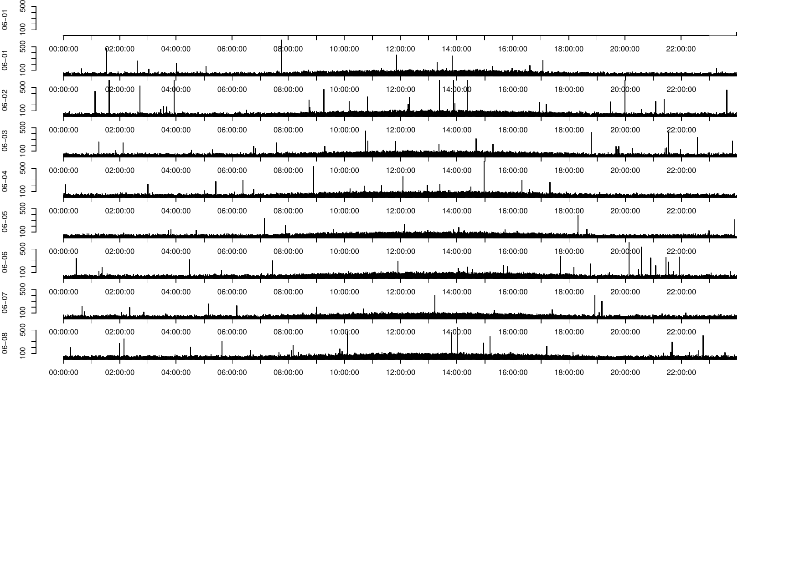

ACTman is an R package for managing and analyzing wrist actigraphy data. It ingests raw exports from supported actigraphy devices, computes standard non-parametric circadian rhythm variables, scores nights of sleep against a sleep log, generates actograms, and (optionally) tracks a set of distributional “early warning signal” statistics over a moving window.
This document is a full manual: installation, concepts, data formats, a function-by-function reference with examples, the package’s internal architecture, and the scientific literature the calculations are based on.
A full worked example using a real (anonymized) actigraphy recording is available as a vignette: vignette("actman-intro", package = "ACTman"), or browse the built documentation site at https://markspan.github.io/ACTman/.
- Installation
- Quick start
- Supported devices and data formats
- Concepts
- Package architecture
- Function reference
- Working directory layout and output files
- Testing
- Known limitations
- Changelog
- References
- License
Installation
install.packages("devtools")
devtools::install_github("markspan/ACTman")ACTman depends on:
| Package | Used for |
|---|---|
dplyr |
lag()/lead()/mutate() in epoch scoring |
moments |
Skewness and kurtosis (EWS metrics) |
mice |
Multiple imputation of missing activity values (na_impute = TRUE) |
nparACT |
Optional cross-validation against an independent implementation (nparACT_compare = TRUE) |
lubridate |
DST-safe calendar arithmetic (increase_by_days()) |
stats, utils, graphics, grDevices
|
Base R functionality (aggregation, plotting, file I/O) |
Quick start
library(ACTman)
## 1. Just the file-level overview (start/end times, missings, recording length):
result <- ACTman(
workdir = "~/actigraphy/study1",
myACTdevice = "Actiwatch2",
circadian_analysis = FALSE,
iwantsleepanalysis = FALSE,
plotactogram = FALSE
)
result$overview
## 2. Overview + non-parametric circadian rhythm variables (IS, IV, RA, L5, M10):
result <- ACTman(
workdir = "~/actigraphy/study1",
myACTdevice = "Actiwatch2",
circadian_analysis = TRUE
)
result$circadian
## 3. Sleep analysis against a sleeplog.csv (see data format section below):
result <- ACTman(
workdir = "~/actigraphy/study1",
myACTdevice = "MW8",
iwantsleepanalysis = TRUE,
lengthcheck = FALSE # don't require >= 14 nights of sleeplog data
)
result$sleep
## 4. Moving-window circadian + early-warning-signal analysis, with actogram:
result <- ACTman(
workdir = "~/actigraphy/study1",
myACTdevice = "MW8",
movingwindow = TRUE,
movingwindow.size = 7, # 7-day window
movingwindow.jump = 1, # shifted by 1 day each step
plotactogram = "24h",
i_want_EWS = TRUE
)
result$rolling_windowACTman() always returns a single actman_result object (an S3 list with $overview, $circadian, $sleep, and $rolling_window), rather than a different bare data frame depending on which flags were set – so calling code never has to guess what a given call returns. Fields for analyses that weren’t requested are NULL; printing the result (print(result), or just typing result at the console) shows a short summary of what ran.
ACTman() prints progress to the console as it works through each file and writes intermediate/managed datasets and result CSVs under the working directory (see Working directory layout).
Supported devices and data formats
ACTman currently supports two actigraphy devices. Files are matched by the myACTdevice argument, not auto-detected, so make sure it matches your export.
Actiwatch 2 (Respironics)
- One
.csvfile per participant/recording, no special header handling: ACTman reads the file withheader = FALSEand takes columns 4, 5, 6 as Date, Time, and Activity respectively. Any leading metadata row whose columns 4:6 don’t parse to a valid date is dropped automatically. - Dates are expected as
dd/mm/yyordd/mm/yyyy(a/20->/substitution handles the 4-digit-year case), or ISOyyyy-mm-ddif a-is detected. - 1-minute epochs are assumed.
MotionWatch 8 (CamNtech)
- Export files contain device metadata, a literal
Raw data:marker line, one header line, then comma-separatedDate,Time,Activitydata rows. ACTman locates theRaw data:marker and starts reading two lines after it (skipping the marker itself and the column header line that follows). - Falls back to tab-separated parsing if the default comma-separated read produces all-
NAcolumns. -
30-second epochs are auto-detected and binned into 60-second epochs: ACTman checks whether the first timestamps end in
:30and, if so, sums each:30half-minute reading into the following:00minute.
Sleeplog file (*sleeplog.csv)
Required for iwantsleepanalysis = TRUE unless a marker file is supplied instead (see below). Tab-separated, with (at minimum) columns:
| Column | Format | Meaning |
|---|---|---|
Date |
YYYY-MM-DD |
Calendar date this row’s night refers to |
Bedtime |
HH:MM |
Self-reported “lights out” time |
Gotup |
HH:MM |
Self-reported wake-up time |
One row per night. If lengthcheck = TRUE (the default), at least 14 rows are required.
Marker/event-button file (*markers.csv)
If no sleeplog is available but the device’s event-marker button was used at bedtime and wake-up, ACTman can derive a sleeplog from the marker timestamps via sleeplog_from_markers() (called automatically from ACTman(iwantsleepanalysis = TRUE, ...) when only a markers file is present). Marker presses are classified as “Bedtime” or “Gotup” by time of day (04:00-14:00 -> Gotup, 14:00-04:00 -> Bedtime), then deduplicated per day. See ?sleeplog_from_markers for the on_missing_markers argument controlling what happens when some nights’ markers are missing or ambiguous.
Concepts
Circadian rhythm analysis
Computed by nparcalc() (via circadian_metrics()), following the non-parametric method of Van Someren et al. (1999) and Witting et al. (1990), widely used in circadian rhythm and rest-activity research (including in dementia, depression, and shift-work studies):
- IS (Interdaily Stability) – how similar the 24-hour activity pattern is from day to day. Computed as the ratio of the variance of the average 24-hour profile to the overall variance across all hours. Ranges from 0 (no consistent daily pattern) up towards 1 (a highly repeatable pattern day after day).
- IV (Interdaily Variability) – the fragmentation of the rhythm: how much activity changes from one hour to the next, relative to the overall variance. Higher values indicate a more fragmented, less consolidated rhythm (more transitions between rest and activity within a day).
-
L5 – the average activity level during the 5 (clock-)hour span of lowest activity in the average 24-hour profile (typically overnight sleep), along with
L5_starttime. -
M10 – the average activity level during the 10 (clock-)hour span of highest activity (typically the main wake period), along with
M10_starttime. -
RA (Relative Amplitude) –
(M10 - L5) / (M10 + L5), a normalized measure of day/night activity contrast (0 = no contrast, 1 = maximal).
## Direct use of the underlying pure function on already-windowed data:
result <- circadian_metrics(CRV.data = my_windowed_data)
result$IS # e.g. 0.62
result$RA # e.g. 0.81Sleep scoring and the sleep log
Per-epoch wake/sleep classification (score_epochs(), used internally by sleepdata_overview()) is a neighbor-weighted activity score: each epoch’s score combines its own activity count with a weighted contribution from the 2 preceding and 2 following epochs, thresholded to classify the epoch as “awake” (score > 20) or “asleep.” Per Kunkels et al. (2020) – the paper describing ACTman itself – this specific weighting scheme is based on CamNtech’s own MotionWare “Information Bulletin No. 3” documentation for the MotionWatch 8 device; it’s in the same general family of approach as the independently-developed Cole-Kripke algorithm (Cole et al., 1992).
Sleep onset (“sleep start”) and sleep offset (“sleep end”) within the Bedtime-to-Gotup window are located using rolling sums of a binarized activity threshold (sleep.chance / wakeup.chance), looking for the first sustained quiet period after bedtime and the first sustained active period before the scheduled wake time. From these, sleepdata_overview() computes, per night:
-
timeinbed,assumed_sleep,actual_sleep_duration,actual_sleep_perc -
actual_wake_duration,actual_wake_perc -
sleep.efficiency(actual sleep / time in bed, as a %) -
sleep.latency(time from Bedtime to actual sleep onset)
sleep_summary <- sleepdata_overview(
workdir = "~/actigraphy/study1",
actdata = managed_activity_data, # Date + Activity columns
i = 1,
lengthcheck = TRUE,
ACTdata.files = act_data_files
)Moving window analysis and early warning signals
When movingwindow = TRUE, run_rolling_window() repeatedly re-runs the circadian + EWS calculations on overlapping/adjacent windows of the recording (movingwindow.size days wide, shifted by movingwindow.jump days each step), producing a time series of each metric rather than one value for the whole recording. This is useful for tracking how rhythm stability, amplitude, or the EWS statistics below change over the course of a longer recording.
Early warning signals (ews_metrics()) are a set of statistics originally developed for anticipating critical transitions in complex dynamical systems (Scheffer et al., 2009) – rising variance and autocorrelation, and slower “recovery” from perturbation, can precede a qualitative shift in system state. They have since been explored as potential early indicators of mood-state transitions from actigraphy and other time series (Van de Leemput et al., 2014):
-
Mean,Variance,SD,CoV(coefficient of variation, %) -
Skewness,Kurtosis -
Autocorr(lag-1) throughAutocorr_lag120(lag-120 minutes) -
Time_to_Recovery– the first lag (minutes) at which autocorrelation drops below 0.2, capped at 120 if it never does within that range
ews <- ews_metrics(CRV.data = my_windowed_data)
ews$Variance
ews$Time_to_RecoveryActograms
plot_actogram() renders a classic actogram (one horizontal bar per day, stacked vertically) as a 24-hour or 48-hour plot (plotactogram = "24h" or "48h"), optionally overlaid with any of the moving-window EWS metrics (i_want_EWS = TRUE, requires movingwindow = TRUE in the same ACTman() call so rolling-window results are available to plot against).
Example output (plotactogram = "24h", 10 days of synthetic activity data with a realistic circadian pattern plus noise, for illustration only – not real participant data):

Package architecture
The package is organized as small, mostly-single-responsibility modules. ACTman() is the orchestrator; everything else is a focused piece it calls:
R/
actman.R # ACTman(): orchestrates the full pipeline per file
config.R # actman_config(): validated configuration object
paths.R # actman_paths(): absolute-path structure, no setwd() anywhere in the package
circadian_metrics.R # IS/IV/RA/L5/M10 -- pure function, no I/O
ews_metrics.R # Mean/Var/SD/CoV/Skewness/Kurtosis/Autocorr/Time-to-recovery -- pure function
nparcalc.R # device-aware windowing, delegates to the two modules above
rolling_window.R # run_rolling_window(): moving-window orchestration over nparcalc()
sleep_scoring.R # score_epochs(): pure per-epoch wake/sleep classification
sleep_summary.R # sleepdata_overview(): per-night sleep metrics, uses score_epochs()
sleeplog.R # sleeplog_from_markers(): derive a sleeplog from event-marker files
actogram.R # plot_actogram(), plot_EWS(), generate_actogram_plot()
increase_by_days.R # DST-safe date arithmetic (via lubridate::days())
utils.R # shared constants (MINUTES_PER_DAY, window sizes, etc.)Every read and write goes through an actman_paths object (an absolute, pre-normalized set of paths for workdir, managed_dir, results_dir, and actogram_dir); no function in the package calls setwd().
The circadian and EWS metric functions (circadian_metrics(), ews_metrics(), score_epochs()) are pure: given the same input data frame, they always return the same output, with no file I/O, printing, or setwd() side effects. This is what makes them independently unit-testable (see Testing) and safe to reuse outside the full ACTman() pipeline.
ACTman() itself still does device-specific file reading and preprocessing inline (period selection, the 14-day length check, missing-data handling, managed-dataset writing) – extracting those into their own modules is tracked as further modernization work.
Function reference
ACTman()
The main entry point. Processes every .csv file in workdir (excluding files matching sleeplog or markers) and returns an overview data frame, sleep summary, or rolling-window result depending on which analyses were requested.
ACTman(
workdir, sleepdatadir = "...", myACTdevice = "Actiwatch2",
iwantsleepanalysis = FALSE, plotactogram = FALSE,
selectperiod = FALSE, startperiod = NULL, daysperiod = FALSE, endperiod = NULL,
movingwindow = FALSE, movingwindow.size = 14, movingwindow.jump = 1,
circadian_analysis = TRUE, nparACT_compare = FALSE,
na_omit = FALSE, na_impute = FALSE, missings_report = TRUE, lengthcheck = TRUE,
i_want_EWS = FALSE,
on_high_missings = c("continue", "abort"),
on_missing_markers = c("median", "manual", "abort")
)Key arguments:
-
myACTdevice:"Actiwatch2"or"MW8"(must match the actual export format). -
circadian_analysis: compute IS/IV/RA/L5/M10 over the whole recording. -
movingwindow/movingwindow.size/movingwindow.jump: run the circadian + EWS calculations over a moving window instead of the whole recording (seerun_rolling_window()). -
iwantsleepanalysis: run per-night sleep scoring against a sleeplog/markers file. -
plotactogram:"24h","48h", orFALSE. -
lengthcheck: require/truncate to 14 days of data (recording) or sleeplog rows. -
na_omit/na_impute: drop missing activity values, or impute them viamice(multiple imputation,m = 5, predictive mean matching). -
on_high_missings: what to do when >0.01% of a file’s activity values are missing andmissings_report = TRUE."continue"(default) proceeds;"abort"stops processing that file. (Replaces an old interactivereadline()prompt so batch/CI runs never hang.) -
on_missing_markers: passed through tosleeplog_from_markers()– see below.
Returns: an actman_result object (see Quick start) with $overview always present, and $circadian/$sleep/$rolling_window populated depending on which analyses were requested.
actman_config(...)
Builds and validates a single configuration object from the same parameters as ACTman() (myACTdevice, missing-data handling, etc.), consolidating validation that used to be scattered across ACTman() (and, for myACTdevice, re-checked on every file in its loop) into one place that fails fast. ACTman() calls this internally as its first step; it’s exported so a set of parameters can also be validated or reused independently of a specific ACTman() call.
nparcalc(myACTdevice, movingwindow, CRV.data, ACTdata.1.sub, out = NULL)
Device- and window-aware entry point that normalizes CRV.data’s columns, locates the start/end of the analysis window, and delegates to circadian_metrics() and ews_metrics(). Returns their combined results plus CRV_data (the windowed data actually used).
circadian_metrics(CRV.data, movingwindow = FALSE)
Pure function. CRV.data must already be windowed to the period of interest, with Date and Activity columns. Returns IS, IV, RA, L5, L5_starttime, M10, M10_starttime.
ews_metrics(CRV.data)
Pure function. Returns Mean, Variance, SD, CoV, Skewness, Kurtosis, Autocorr (lag 1) through Autocorr_lag120, and Time_to_Recovery.
run_rolling_window(x, window, jump, myACTdevice, ACTdata.1.sub, verbose = TRUE)
Runs nparcalc() repeatedly over overlapping/adjacent window-minute spans of x, shifting by jump minutes each step. Returns one row per window with columns starttime, endtime, and all circadian_metrics() / ews_metrics() outputs.
score_epochs(aaa)
Pure function. aaa must have an Activity..MW.counts. column. Adds score, WakeSleep, MobileImmobile, epoch.sleep.chance, sleep.chance, and wakeup.chance columns.
sleepdata_overview(workdir, actdata, i, lengthcheck, ACTdata.files, on_missing_markers = c("median", "manual", "abort"))
Computes per-night sleep metrics for one file, reading (or generating, via sleeplog_from_markers()) a sleeplog as needed. Returns a data frame with one row per night (see Sleep scoring for the columns) and writes a *-sleep-results.csv to workdir/Results.
sleeplog_from_markers(workdir, i, ACTdata.files, on_missing_markers = c("median", "manual", "abort"))
Derives a sleeplog from an event-marker file. on_missing_markers controls what happens when some nights’ Bedtime/Gotup can’t be determined:
-
"median"(default): impute the missing time with the median across other nights. -
"manual": open an interactivefix()editor to fill in values by hand. Requires an interactive R session; errors clearly if called from a script/CI instead of hanging. -
"abort": stop rather than guess.
plot_actogram(workdir, ACTdata.1.sub, i, plotactogram, rollingwindow.results, i_want_EWS)
Renders and saves a 24h or 48h actogram PDF (and, if i_want_EWS = TRUE, one PNG per EWS metric overlaid on the activity trace) to workdir/Actograms (created if needed).
increase_by_days(timeobj, nr_days)
Adds (or subtracts, for negative nr_days) whole days to a date/time, correctly handling daylight-saving-time transitions so the returned wall-clock time matches the original (e.g. adding 3 days across a spring-forward transition still returns the same HH:MM:SS).
increase_by_days("2016-03-25 09:00:00", 3)
# "2016-03-28 09:00:00" -- same wall-clock time, DST-transition-safeWorking directory layout and output files
ACTman() reads from and writes several subdirectories under workdir:
workdir/
<participant files>.csv # raw device exports
*sleeplog.csv / *markers.csv # sleep log or event-marker files (if used)
Managed Datasets/
<filename>/<filename> MANAGED.txt # cleaned, reformatted per-file data
Results/
ACTdata_overview.csv # the main file-level overview
ACTdata_circadian_res.csv # IS/IV/RA/L5/M10 per file (if circadian_analysis)
<filename>-rollingwindow-results.csv # if movingwindow = TRUE
<filename>-sleep-results.csv # if iwantsleepanalysis = TRUE
Actograms/ # actogram PDFs/PNGs, if plotactogram is setTesting
Every push and pull request against development runs the full test suite and R CMD check --as-cran across Linux, macOS, and Windows via GitHub Actions (.github/workflows/R-CMD-check.yaml), test coverage tracking via covr/Codecov (.github/workflows/test-coverage.yaml), and static analysis via lintr (.github/workflows/lint.yaml, gated on zero lints under the project’s .lintr config – see that file for a few linters that are intentionally disabled, with documented reasons, rather than configured to silently accept pre-existing issues). Code is formatted with styler (tidyverse style, non-strict).
The test suite includes:
-
Characterization tests (
test-characterization.R): freeze the circadian-analysis pipeline’s numeric output against synthetic Actiwatch2/MW8 fixtures, to catch unintended behavior changes during future refactoring. -
Unit tests for
increase_by_days()(including a DST transition case),circadian_metrics()/nparcalc()(formula sanity/consistency checks, NA handling),run_rolling_window(), andscore_epochs()/sleepdata_overview()(an end-to-end sleep-scoring integration test on a synthetic 2-night fixture). -
Parameter validation tests for
on_high_missings,on_missing_markers, and edge cases like an emptyworkdir.
See NEWS.md for the fixes these tests were written to lock in.
Known limitations
- The night-by-night sleep-scoring loop in
sleepdata_overview()has several hand-documented edge cases (irregular Bedtime/Gotup ordering, markers spanning midnight) that are handled heuristically rather than formally verified; see inline#!comments in the source for known rough edges. - Device support is limited to Actiwatch 2 and MotionWatch 8 exports.
-
nparACT_compare = TRUErequires the separatenparACTpackage (Suggests, notImports– only needed for this specific feature). Cross-validated against real data (seetest-nparact-validation.R):RA/L5/M10/L5_starttimeagree closely to exactly between the two independent implementations,IS/IVshow moderate divergence, andM10_starttimeshows a more notable divergence (~1.5 hours on the bundled example recording) that isn’t yet fully root-caused – both implementations use a structurally identical sliding-window approach, so this most likely reflects a day-boundary/alignment difference rather than a fundamentally different method. -
plot_actogram()limits (and requires) recordings to 14 days rather than adapting to the actual data length. - Sleep variables are matched to a night in the sleeplog by row/iteration number rather than by date, and actogram/data files are likewise reported by iteration number rather than filename – both work correctly for the common case (one file per participant, sleeplog rows in date order) but are a latent source of misalignment if that assumption doesn’t hold.
-
sleep_summary.R’s per-night loop uses very terse variable names (aaa,tempp,sleepend,rownr.*); left as-is rather than renamed mechanically until test coverage of its edge-case branches is strong enough to do so safely (seeNEWS.md, Phase 5). -
actogram.Rbuilds per-day variables viaassign()/eval(parse())rather than a list; the least idiomatic remaining pattern in the codebase, not yet replaced. - The EWS-overlay-on-real-rolling-window-data path in
plot_actogram()(i_want_EWS = TRUEwith real, non-NArolling window results) has no test coverage; only the error path (NAresults) is currently tested (see the# nolintblock inactogram.R).
Changelog
See NEWS.md for the detailed history of bug fixes and behavioral changes.
Citation
If you use ACTman in published work, please cite:
Kunkels, Y. K., Knapen, S. E., Zuidersma, M., Wichers, M., Riese, H., & Emerencia, A. C. (2020). ACTman: Automated preprocessing and analysis of actigraphy data. Journal of Science and Medicine in Sport, 23(5), 481-486. https://doi.org/10.1016/j.jsams.2019.11.009
Read the paper: publisher’s version (DOI) | open-access copy via University of Groningen (Pure)
References
CamNtech (2013). Information Bulletin No. 3: Sleep Analysis Algorithms. MotionWare software documentation, CamNtech Ltd. (source of the epoch weighting scheme used in score_epochs(), per Kunkels et al. 2020.)
Cole, R. J., Kripke, D. F., Gruen, W., Mullaney, D. J., & Gillin, J. C. (1992). Automatic sleep/wake identification from wrist activity. Sleep, 15(5), 461-469.
Kunkels, Y. K., Knapen, S. E., Zuidersma, M., Wichers, M., Riese, H., & Emerencia, A. C. (2020). ACTman: Automated preprocessing and analysis of actigraphy data. Journal of Science and Medicine in Sport, 23(5), 481-486.
Scheffer, M., Bascompte, J., Brock, W. A., Brovkin, V., Carpenter, S. R., Dakos, V., Held, H., van Nes, E. H., Rietkerk, M., & Sugihara, G. (2009). Early-warning signals for critical transitions. Nature, 461(7260), 53-59.
Van de Leemput, I. A., Wichers, M., Cramer, A. O. J., Borsboom, D., Tuerlinckx, F., Kuppens, P., van Nes, E. H., Viechtbauer, W., Giltay, E. J., Aggen, S. H., Derom, C., Jacobs, N., Kendler, K. S., van der Maas, H. L. J., Neale, M. C., Peeters, F., Thiery, E., Zachar, P., & Scheffer, M. (2014). Critical slowing down as early warning for the onset and termination of depression. Proceedings of the National Academy of Sciences, 111(1), 87-92.
Van Someren, E. J. W., Swaab, D. F., Colenda, C. C., Cohen, W., McCall, W. V., & Rosenquist, P. B. (1999). Bright light therapy: improved sensitivity to its effects on rest-activity rhythms in Alzheimer patients by application of nonparametric methods. Chronobiology International, 16(4), 505-518.
Witting, W., Kwa, I. H., Eikelenboom, P., Mirmiran, M., & Swaab, D. F. (1990). Alterations in the circadian rest-activity rhythm in aging and Alzheimer’s disease. Biological Psychiatry, 27(6), 563-572.
License
MIT (see LICENSE).